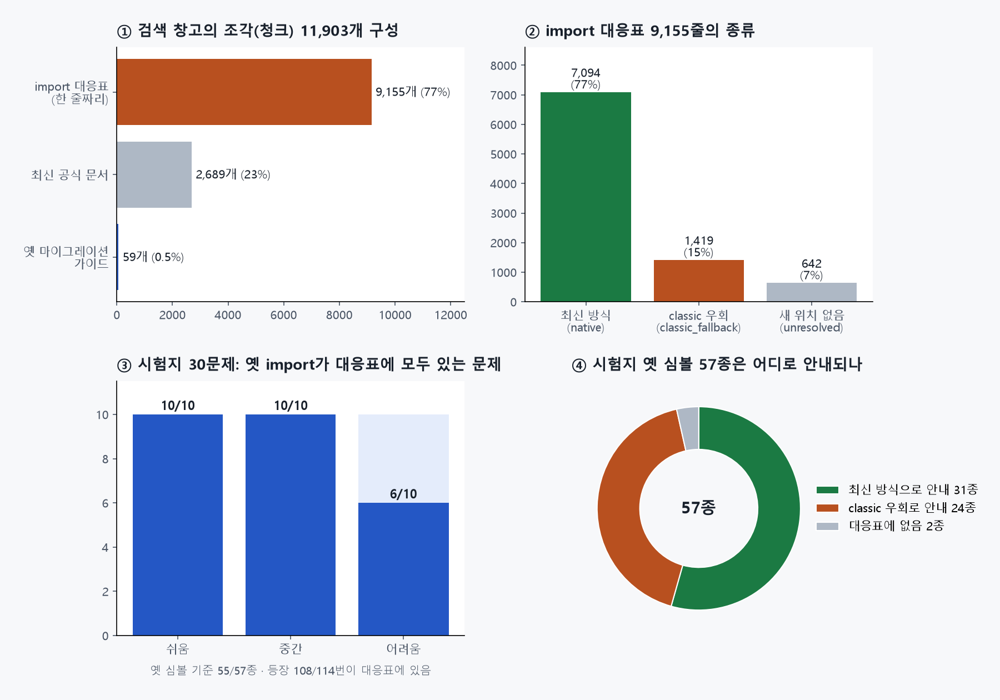

LANGCHAIN 마이그레이션 도우미 · 2번 데이터 분석 (팀 저장소 읽기 전용 · 역할 번호로 정리)
팀 저장소 2번 브랜치에 올라온 문서 · import 대응표 · 검색 조각 · 벡터 DB를 숫자로 살펴보고, 4번의 시험지 30문제와 맞춰 봤습니다. 2번을 평가하려는 것이 아니라 프로젝트를 이해하려는 분석입니다.
이것 세 줄만 기억해도 됩니다
prompt | llm, create_agent)이 함께 적혀 있어 최신 방식으로 바꿀 실마리가 있습니다.1장
주방 비유: 2번은 새 주방 안내서를 만드는 사람입니다. 이번에 올라온 것은 안내서 원본, "옛 서랍 → 새 서랍" 이사 목록, 그리고 그것을 잘게 잘라 넣은 검색 창고와 찾아 주는 사람(검색기)입니다.
| 순서 | 한 일 | 결과 파일 | 규모 |
|---|---|---|---|
| 1 | 버전별 도구 목록 뽑기 (LangChain 0.0.300 ~ 1.4.4 등 23개 패키지 버전) | data/raw/symbols/*.jsonl |
버전당 수십 ~ 7,800개 |
| 2 | 최신 공식 문서 모으기 | data/raw/docs/latest/ |
271개 (약 4.4MB) |
| 3 | 옛 마이그레이션 가이드 모으기 (0.3 시점) | data/raw/docs/migration/ |
24개 (체인 13 · 메모리 5 · 버전 안내 5 · 에이전트 1) |
| 4 | import 대응표 만들기 (옛 위치 → 새 위치, 실제 import 확인까지) | data/processed/import_map.jsonl |
9,155줄 |
| 5 | 검색용 조각(청크) 만들기 | data/processed/chunks.jsonl |
11,903개 |
| 6 | 벡터 DB (Chroma, OpenAI text-embedding-3-small, 1536차원) |
data/vectordb/chroma/ |
11,903개 (조각 수와 같음) |
| 7 | 검색기 (대응표 정확 매칭 + 문서 하이브리드 검색) | src/rag/retrieval/ |
– |
2장

① 검색 창고 구성: 조각 11,903개 중 77%가 대응표 한 줄짜리(평균 170자 안팎)입니다. 최신 문서는 2,689개(중간값 902자), 옛 가이드는 59개뿐이지만 하나가 깁니다(중간값 3,144자, 최대 8,062자).
② 대응표 종류
| 종류 | 줄 수 | 뜻 |
|---|---|---|
| 최신 방식 (native) | 7,094 (77%) | 새 위치로 바로 옮기면 됨 |
| classic 우회 (classic_fallback) | 1,419 (15%) | 1.x에서 없어져 langchain_classic에만 남음 |
| 새 위치 없음 (unresolved) | 642 (7%) | 옮길 곳을 못 찾음 |
실제 import 확인 결과: 성공 8,001 · 패키지 없음 488 (예: langchain_google_community) · 오류 19 · 의존성 없음 5.
품질 점검
| 항목 | 결과 |
|---|---|
| 같은 옛 위치가 두 번 나오는 줄 | 0개 |
| 너무 짧은 조각 (80자 미만) | 0개 |
| 너무 긴 조각 (4,000자 초과) | 69개 |
| 내용이 완전히 같은 조각 | 7개 |
근거 ID (chunk_id) |
11,903개 모두 있음 (imap-…, doc-… 형식) |
원문 링크 (url) |
2,748개 (문서 조각만, 대응표 조각에는 없음) |
3장
4번의 시험지(옛 코드 30개)에 나오는 옛 import 57종(등장 114번)을 대응표에서 찾아봤습니다.
| 확인 | 결과 |
|---|---|
| 대응표에 있음 | 55/57종 (등장 기준 108/114번) |
| 새 위치가 실제로 import됨 (LangChain 1.4.4 환경) | 53/55 |
| import 실패 2개 | langchain_chroma 미설치, load_tools의 의존성(mypy_extensions) 미설치 → 데이터 문제가 아니라 시험 환경 문제 |
| 대응표에 없음 | langchain.tools.tool (4문제), langchain.hub (2문제) |
| 난이도별 "옛 import가 모두 대응표에 있는 문제" | 쉬움 10/10 · 중간 10/10 · 어려움 6/10 |
대응표에 없는 2개에 대해: langchain.tools.tool은 1.x에서도 위치가 그대로라서 이사 목록에 없는 것이 자연스럽습니다. langchain.hub는 1.x에서 빠진 기능입니다.
새 위치가 시험지 정답과 다른 경우: 대부분 문제가 아닙니다.
| 옛 위치 | 대응표 안내 | 시험지 정답 방향 | 해석 |
|---|---|---|---|
langchain.vectorstores.Chroma |
langchain_chroma.Chroma |
langchain_community.vectorstores |
대응표 쪽이 더 최신 경로. 평가는 import 성공으로 판정하므로 둘 다 인정됨 |
langchain.agents.Tool |
langchain_core.tools.Tool |
(정답은 @tool로 바꿈) |
둘 다 가능 |
| 옛 체인 · 메모리 · 에이전트 24종 | langchain_classic.… |
LCEL, create_agent 등 구조를 바꿈 |
4장 확인 1 |
4장
2번의 검색기는 이미 대응표와 문서를 따로 찾고, 실패하면 범위를 넓혀 다시 찾도록 잘 설계되어 있습니다. 그래서 아래는 "고쳐야 할 것"이 아니라 같이 확인해 보고 싶은 것입니다.
| # | 본 것 | 왜 궁금한가 | 물어볼 말 |
|---|---|---|---|
| 1 | 시험지의 옛 체인 · 에이전트 24종을 대응표가 classic 우회로 안내 (이 중 8종은 대안이 함께 있음) | 대안이 없는 것은 챗봇이 대응표만 따르면 "통과는 하지만 옛 방식"이 될 수 있음 | "대안이 없는 classic 항목은 rewriter가 가이드 문서를 같이 보는 흐름일까요?" (3번과 함께) |
| 2 | 옛 가이드 조각에 가중치 0.8 | LLMChain → LCEL 같은 바꾸는 방법 설명은 옛 가이드에 많음 | "옛 가이드가 0.8로 내려가도 체인 질문에서 상위에 잘 나오는지 한번 같이 볼 수 있을까요?" |
| 3 | 정확 매칭된 새 import를 쓰는 문서에 1.5배 가산 | 새 import가 classic이면 classic 예시 문서가 올라올 수도 있음 | "classic으로 매칭될 때도 가산이 붙나요?" |
| 4 | 최신 문서 271개 중 209개가 외부 연동(integrations) 페이지 | 마이그레이션과 관련 적은 문서가 섞일 수 있음 | "연동 문서는 일부러 넣으신 걸까요? (예: 벡터스토어 이사 대비)" |
| 5 | 원문 링크는 문서 조각에만 있음 | 화면의 "근거 문서 열기" 링크를 대응표 근거에는 못 붙임 | "대응표 근거에는 어떤 링크를 보여 주면 좋을까요?" |
| 6 | 벡터 DB 파일 69MB + 64MB | GitHub 100MB 제한보다는 작지만 저장소가 무거워짐 | "다시 만드는 명령이 있으면 README에 같이 적어 둘까요?" |
5장
| 영역 | 의미 | 할 일 |
|---|---|---|
| 평가 | 근거 ID는 2번 형식(chunk_id)을 그대로 쓰면 됨 |
내 연습 초안의 근거 ID 규칙(문서#섹션-번호)은 버리고 2번 형식에 맞추기 |
| 평가 | classic 우회가 많으면 classic 의존 비율 지표가 중요해짐 | 결과 정리 때 "통과"와 "최신 방식 통과"를 나눠 보여 주기 |
| 평가 | 어려움 4문제는 대응표 밖 심볼(tool, hub)을 포함 |
이 4문제는 문서 검색과 검증 루프의 효과를 보여 줄 좋은 사례 |
| 화면 | 근거 링크는 문서 조각에만 있음 | 대응표 근거는 "옛 위치 → 새 위치" 글자로 보여 주기 |
| 시험 환경 | langchain_chroma, mypy_extensions 없음 |
팀 검증 환경 패키지 목록을 1번 · 3번과 맞추기 |
6장
원칙은 05 문서와 같습니다: 좋은 점 먼저, 궁금한 점은 질문으로, 짧게.
2번님, 올려 주신 데이터 공부하면서 한번 살펴봤어요! 대응표가 9천 줄이 넘는데 실제 import까지 확인돼 있어서 정말 든든해요.
제 시험용 옛 코드 30개랑 맞춰 봤는데, 옛 import 57종 중 55종이 대응표에 있었어요 👍
궁금한 게 하나 있는데, LLMChain처럼 1.x에서 없어진 것은 대응표가 classic으로 안내하더라고요. 이런 건 rewriter가 가이드 문서를 같이 보고 LCEL로 바꾸는 흐름일까요? 회의 때 같이 얘기해 봐요 🙏
7장
답을 누르면 바로 알려 줍니다.
8장
체크한 내용은 이 브라우저에만 저장됩니다.